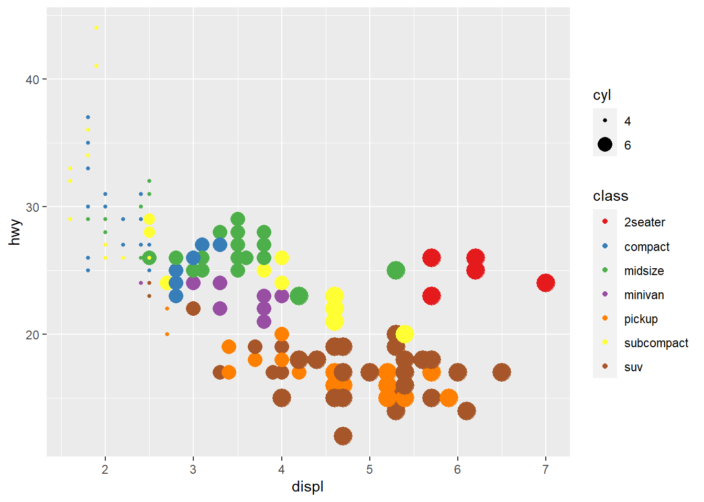
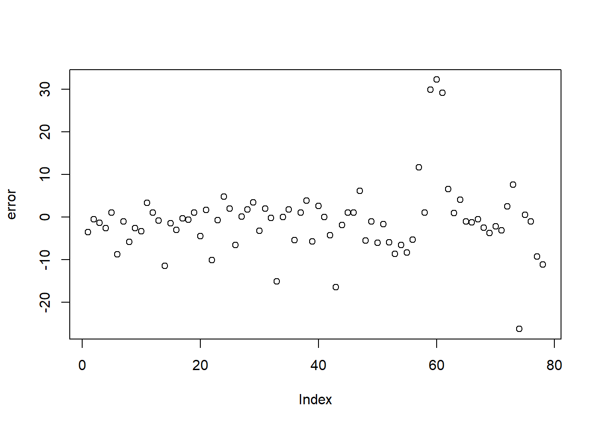
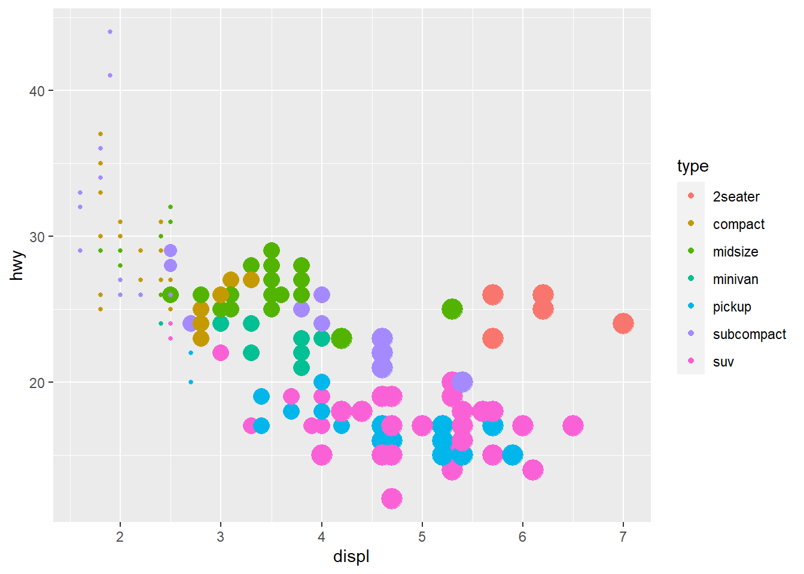
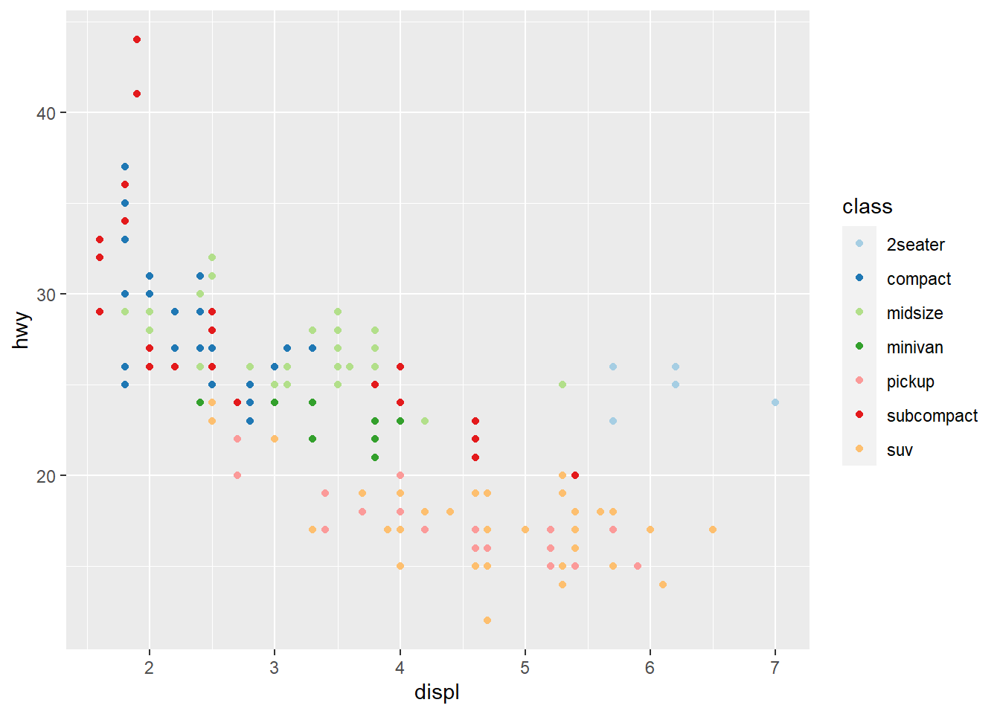

4 Data visualization
Data visualization is not only about making plots look “pretty.” In real projects, visualization has three practical jobs:
- Understand the data: distributions, outliers, missingness, and relationships.
- Communicate findings: help others quickly grasp patterns and results.
- Validate assumptions: especially before modeling (linearity, normality, separation, influential points, etc.).
This chapter focuses on ggplot2 (in the tidyverse ecosystem) and a few practical companion tools. The goal is to build a workflow that is repeatable: summarize → reshape → visualize → refine → annotate → communicate.
4.1 Data visualization introduction
Before plotting, it is often useful to summarize, reshape, and clean your data. Many plotting tasks become straightforward once the dataset is in a tidy (“long”) format. The section below shows common operations that prepare your data for visualization.
4.1.1 Summarization
A typical first step is to compute group-level summaries. In practice, these summaries help you: - sanity-check units and ranges, - compare groups quickly, - decide which plots are appropriate (boxplots, line charts, etc.).
The following example converts miles-per-gallon (mpg) into a rough metric unit and summarizes by cylinder group.
library(tidyverse)
library(dplyr)
mtcars %>%
mutate( kml = mpg * 0.42) %>%
group_by(cyl) %>%
summarise(avg_US = mean(mpg), avg_metric = mean(kml))## # A tibble: 3 × 3
## cyl avg_US avg_metric
## <dbl> <dbl> <dbl>
## 1 4 26.7 11.2
## 2 6 19.7 8.29
## 3 8 15.1 6.34The next summary computes average city and highway mileage by manufacturer and year.
In reporting, this kind of grouped summary often becomes the basis for trend plots and comparisons.
## # A tibble: 30 × 4
## # Groups: manufacturer [15]
## manufacturer year cty hwy
## <chr> <int> <dbl> <dbl>
## 1 audi 1999 17.1 26.1
## 2 audi 2008 18.1 26.8
## 3 chevrolet 1999 15.1 21.6
## 4 chevrolet 2008 14.9 22.1
## 5 dodge 1999 13.4 18.4
## 6 dodge 2008 13.0 17.6
## 7 ford 1999 13.9 18.6
## 8 ford 2008 14.1 20.5
## 9 honda 1999 24.8 31.6
## 10 honda 2008 24 33.8
## # ℹ 20 more rows- change layout
Sometimes you want a table for quick comparison rather than a plot.
Here we count cars by class and year, then spread into a wide layout (years as rows, classes as columns).
This is helpful for producing “Table 1 style” counts or for feeding into heatmaps.
## # A tibble: 2 × 8
## year `2seater` compact midsize minivan pickup subcompact suv
## <int> <int> <int> <int> <int> <int> <int> <int>
## 1 1999 2 25 20 6 16 19 29
## 2 2008 3 22 21 5 17 16 33- change all characters into factors
Many plotting functions treat characters as discrete categories anyway, but converting tofactorcan make your intent explicit and allows you to control ordering and labeling more deliberately.
This is especially useful for facets and legends.
- wide to long data
A common visualization trick is to stack multiple measurement columns into a long format.
Here we convertctyandhwyinto a single numeric column with a key indicating which metric it came from.
Long format is the natural input format for ggplot because it plays well with color, linetype, and facets.
- convert wide data to long data using
pivot_longerpivot_longer()is the modern tidyverse replacement forgather().
This example:
- pivots
ctyandhwyinto long form,
- recodes the indicator variable into friendly labels,
- overlays points and smooth curves for each measurement type.
This is a classic real-world pattern: put the data in long format, then map the “type” to color.
## Your code here. Naming choices for 1 and 2 are yours
dta <- mpg %>%
pivot_longer(cty:hwy, names_to = "var", values_to = "value") %>% # Both of those are
# value label
mutate(var = ifelse( var == 'cty', 'city','highway'))
ggplot(dta, aes(x = displ, y = value)) +
geom_point(aes(color = var)) +
geom_smooth(aes(color = var), se = F)## `geom_smooth()` using method = 'loess' and formula = 'y ~ x'
- explore distribution
Exploratory distribution plots help you quickly identify: - skewed variables,
- implausible values,
- heavy tails,
- and whether transformations (log, sqrt) might be helpful.
Packages like DataExplorer and psych provide rapid EDA utilities.
(Here, riskfactors is assumed to exist in your environment.)
##
## Attaching package: 'psych'## The following objects are masked from 'package:ggplot2':
##
## %+%, alpha## Warning: package 'naniar' was built under R version 4.4.3- explore relationship/correlation
Pairwise plots are very useful early in analysis because they reveal: - correlations,
- nonlinear patterns,
- clustering,
- and outliers that may dominate a model.
These are especially valuable before regression or machine learning.
## Warning in cor(x, y, use = "pairwise", method = method): the standard deviation
## is zero
## Warning in cor(x, y, use = "pairwise", method = method): the standard deviation
## is zero
- create a individual theme
In a book or internal training material, consistent formatting matters.
Creating your own theme function lets you apply the same style across all figures: - consistent font sizes,
- consistent background,
- consistent axis formatting.
This is a practical “quality of life” improvement when you generate many plots.
4.1.2 Explore missing values
Missingness is not just a data cleaning issue—it can be informative.
Before you impute or drop data, you should understand:
- which variables have missingness,
- whether missingness co-occurs across variables,
- and whether missingness is related to groups (e.g., sites, time periods).
The following blocks use naniar and related tools to visualize missing patterns.
gg_miss_upset() is useful for seeing combinations of missing variables (like an Upset plot). This helps identify patterns such as “these three labs are often missing together.”
## Warning: `aes_string()` was deprecated in ggplot2 3.0.0.
## ℹ Please use tidy evaluation idioms with `aes()`.
## ℹ See also `vignette("ggplot2-in-packages")` for more information.
## ℹ The deprecated feature was likely used in the UpSetR package.
## Please report the issue to the authors.
## This warning is displayed once every 8 hours.
## Call `lifecycle::last_lifecycle_warnings()` to see where this
## warning was generated.## Warning: Using `size` aesthetic for lines was deprecated in ggplot2 3.4.0.
## ℹ Please use `linewidth` instead.
## ℹ The deprecated feature was likely used in the UpSetR package.
## Please report the issue to the authors.
## This warning is displayed once every 8 hours.
## Call `lifecycle::last_lifecycle_warnings()` to see where this
## warning was generated.## Warning: The `size` argument of `element_line()` is deprecated as of ggplot2
## 3.4.0.
## ℹ Please use the `linewidth` argument instead.
## ℹ The deprecated feature was likely used in the UpSetR package.
## Please report the issue to the authors.
## This warning is displayed once every 8 hours.
## Call `lifecycle::last_lifecycle_warnings()` to see where this
## warning was generated.plot_missing() gives a quick overall missingness view, often used at the start of EDA.

visdat::vis_dat() is a fast way to inspect column types and missingness at once.
It’s particularly helpful to detect:
- columns accidentally read as character,
- columns with mixed types,
- or unexpected missing patterns.
4.1.3 Add statistical test
Plots often become more persuasive when paired with a simple statistical comparison—but you should add tests carefully: - avoid fishing/over-testing, - ensure assumptions are reasonable, - and interpret p-values in context.
Here we build a faceted boxplot and add a comparison between years (1999 vs 2008) for each manufacturer.
This is a practical template for “small multiple” visual comparisons with annotated tests.
library(ggpubr)
plt <- ggplot( data=mpg,
mapping= aes(x = as.factor(year),
y = cty,
color = as.factor(year) ) )+
geom_boxplot() +
geom_jitter(width=0.1)+
labs(x = 'Year',
y = "City mpg") +
my_theme()+ facet_wrap( ~ manufacturer,nrow = 2)
# add statistical test
my_comparisons <- list(c('1999','2008'))
plt + stat_compare_means() +
stat_compare_means(comparisons = my_comparisons)
4.1.4 Add texts to dots
When plotting many points, labels can clutter quickly.
But for small datasets (or when identifying key outliers), labels add interpretability.
This example labels each state for a scatter plot of urban population vs murder arrests.
USArrests <- USArrests %>% rownames_to_column('State')
ggplot(USArrests, aes(
x=UrbanPop,y=Murder))+
geom_point() +
labs(x = "Percent of population that is urban",
y = "Murder arrests (per 100,000)",
caption = "McNeil (1997). Interactive Data Analysis")+
geom_text(aes(label=State),size=3)
4.1.5 Set the legend
Legends are often the difference between a confusing figure and a publishable one.
Here we demonstrate manual control of:
- fill colors,
- linetypes,
- legend title and labels.
In practice, manual scales are useful when you want consistent colors across plots in a report or book.
ggplot(iris, aes(x= Sepal.Length , fill= as.factor( Species)) ) + #whole plot's option
geom_histogram(aes(y=..density..),alpha=0.5, position="identity" , bins = 50)+
geom_density(aes(linetype=as.factor(Species)),alpha=.1 )+ #aesthetic's option
scale_fill_manual( name = "Groups",values = c("grey", "black", "skyblue"),labels = c("setosa", "versicolor" , "virginica" ))+
scale_linetype_manual( name = "Groups" ,values = c(1,3,5),labels = c("setosa", "versicolor" , "virginica") )+ # common legend
labs(x = "Sepal.Length",
y = "Density",
title = "") ## Warning: The dot-dot notation (`..density..`) was deprecated in ggplot2
## 3.4.0.
## ℹ Please use `after_stat(density)` instead.
## This warning is displayed once every 8 hours.
## Call `lifecycle::last_lifecycle_warnings()` to see where this
## warning was generated.4.1.6 Create a panel of plots
A panel (multi-plot layout) is a very effective way to summarize multiple variables at once.
In exploratory analysis, it helps you quickly see:
- distributions (histogram, bar),
- group differences (boxplot),
- and composition (stacked percent bars).
Here we build four plots and arrange them into a 2×2 panel.
p1=ggplot(data=riskfactors,aes(x=age))+
geom_histogram(bins = 30 )
p2=ggplot(data=riskfactors,aes(x=sex))+
geom_bar (aes(x=sex) )
p3=ggplot(riskfactors,aes(x = education, y = bmi))+
geom_boxplot ( )
p4=ggplot(riskfactors, aes(x = marital )) +
geom_bar(aes(group = education, y = (..count..)/sum(..count..),fill = education)) +
scale_y_continuous(labels=scales::percent)
# install.packages("ggpubr")
library(ggpubr)
ggarrange(p1, p2, p3, p4, ncol = 2, nrow=2)## Warning: Removed 11 rows containing non-finite outside the scale range
## (`stat_boxplot()`).4.1.7 Plots in regression
Visualization is a powerful companion to regression: - diagnostic plots check assumptions, - coefficient/OR plots communicate model results, - and fitted relationships can be compared across groups.
- create linear regression model
We fit a linear regression on Boston housing as a demonstration.
In practice, you would check residuals, leverage, and outliers; this section mainly sets up the model for coefficient visualization.
data("Boston", package = "MASS")
linear_reg <- glm(medv ~ ., data=Boston , family = gaussian())
summary(linear_reg)##
## Call:
## glm(formula = medv ~ ., family = gaussian(), data = Boston)
##
## Coefficients:
## Estimate Std. Error t value Pr(>|t|)
## (Intercept) 3.646e+01 5.103e+00 7.144 3.28e-12 ***
## crim -1.080e-01 3.286e-02 -3.287 0.001087 **
## zn 4.642e-02 1.373e-02 3.382 0.000778 ***
## indus 2.056e-02 6.150e-02 0.334 0.738288
## chas 2.687e+00 8.616e-01 3.118 0.001925 **
## nox -1.777e+01 3.820e+00 -4.651 4.25e-06 ***
## rm 3.810e+00 4.179e-01 9.116 < 2e-16 ***
## age 6.922e-04 1.321e-02 0.052 0.958229
## dis -1.476e+00 1.995e-01 -7.398 6.01e-13 ***
## rad 3.060e-01 6.635e-02 4.613 5.07e-06 ***
## tax -1.233e-02 3.760e-03 -3.280 0.001112 **
## ptratio -9.527e-01 1.308e-01 -7.283 1.31e-12 ***
## black 9.312e-03 2.686e-03 3.467 0.000573 ***
## lstat -5.248e-01 5.072e-02 -10.347 < 2e-16 ***
## ---
## Signif. codes: 0 '***' 0.001 '**' 0.01 '*' 0.05 '.' 0.1 ' ' 1
##
## (Dispersion parameter for gaussian family taken to be 22.51785)
##
## Null deviance: 42716 on 505 degrees of freedom
## Residual deviance: 11079 on 492 degrees of freedom
## AIC: 3027.6
##
## Number of Fisher Scoring iterations: 2- summary
broom::tidy()produces a clean summary table that is easy to include in reports.
Usingknitr::kable()formats it neatly in HTML/PDF output.
| term | estimate | std.error | statistic | p.value |
|---|---|---|---|---|
| (Intercept) | 36.4594884 | 5.1034588 | 7.1440742 | 0.0000000 |
| crim | -0.1080114 | 0.0328650 | -3.2865169 | 0.0010868 |
| zn | 0.0464205 | 0.0137275 | 3.3815763 | 0.0007781 |
| indus | 0.0205586 | 0.0614957 | 0.3343100 | 0.7382881 |
| chas | 2.6867338 | 0.8615798 | 3.1183809 | 0.0019250 |
| nox | -17.7666112 | 3.8197437 | -4.6512574 | 0.0000042 |
| rm | 3.8098652 | 0.4179253 | 9.1161402 | 0.0000000 |
| age | 0.0006922 | 0.0132098 | 0.0524024 | 0.9582293 |
| dis | -1.4755668 | 0.1994547 | -7.3980036 | 0.0000000 |
| rad | 0.3060495 | 0.0663464 | 4.6128998 | 0.0000051 |
| tax | -0.0123346 | 0.0037605 | -3.2800091 | 0.0011116 |
| ptratio | -0.9527472 | 0.1308268 | -7.2825106 | 0.0000000 |
| black | 0.0093117 | 0.0026860 | 3.4667926 | 0.0005729 |
| lstat | -0.5247584 | 0.0507153 | -10.3471458 | 0.0000000 |
- create logistical regression
We fit logistic regression on the diabetes dataset. This is a classic example where coefficient plots and OR plots become very helpful for communication.
## Warning: package 'mlbench' was built under R version 4.4.3data(PimaIndiansDiabetes)
# rename dataset to have shorter name because lazy
diabetes <- PimaIndiansDiabetes
logistic_reg <- glm(diabetes ~ ., data=diabetes, family = binomial)
summary(logistic_reg)##
## Call:
## glm(formula = diabetes ~ ., family = binomial, data = diabetes)
##
## Coefficients:
## Estimate Std. Error z value Pr(>|z|)
## (Intercept) -8.4046964 0.7166359 -11.728 < 2e-16 ***
## pregnant 0.1231823 0.0320776 3.840 0.000123 ***
## glucose 0.0351637 0.0037087 9.481 < 2e-16 ***
## pressure -0.0132955 0.0052336 -2.540 0.011072 *
## triceps 0.0006190 0.0068994 0.090 0.928515
## insulin -0.0011917 0.0009012 -1.322 0.186065
## mass 0.0897010 0.0150876 5.945 2.76e-09 ***
## pedigree 0.9451797 0.2991475 3.160 0.001580 **
## age 0.0148690 0.0093348 1.593 0.111192
## ---
## Signif. codes: 0 '***' 0.001 '**' 0.01 '*' 0.05 '.' 0.1 ' ' 1
##
## (Dispersion parameter for binomial family taken to be 1)
##
## Null deviance: 993.48 on 767 degrees of freedom
## Residual deviance: 723.45 on 759 degrees of freedom
## AIC: 741.45
##
## Number of Fisher Scoring iterations: 5- summary
Again,broom::tidy()provides a clear coefficient table.
| term | estimate | std.error | statistic | p.value |
|---|---|---|---|---|
| (Intercept) | -8.4046964 | 0.7166359 | -11.7279870 | 0.0000000 |
| pregnant | 0.1231823 | 0.0320776 | 3.8401403 | 0.0001230 |
| glucose | 0.0351637 | 0.0037087 | 9.4813935 | 0.0000000 |
| pressure | -0.0132955 | 0.0052336 | -2.5404160 | 0.0110721 |
| triceps | 0.0006190 | 0.0068994 | 0.0897131 | 0.9285152 |
| insulin | -0.0011917 | 0.0009012 | -1.3223094 | 0.1860652 |
| mass | 0.0897010 | 0.0150876 | 5.9453340 | 0.0000000 |
| pedigree | 0.9451797 | 0.2991475 | 3.1595780 | 0.0015800 |
| age | 0.0148690 | 0.0093348 | 1.5928584 | 0.1111920 |
4.1.7.1 Create forest plots for coefficients or OR
Forest plots are one of the most practical ways to present regression results: - For linear regression, coefficients are on the original outcome scale. - For logistic regression, coefficients are usually transformed to odds ratios (OR).
sjPlot::plot_model() offers fast, clean coefficient plots.
## Warning: package 'sjPlot' was built under R version 4.4.3##
## Attaching package: 'sjPlot'## The following object is masked from 'package:ggplot2':
##
## set_theme
Here we plot logistic regression results similarly.
In practice, you may want to ensure the plot displays OR (exp(beta)) depending on the function defaults and your audience.
another way
finalfit provides publication-friendly coefficient/OR plots with tables.
This is especially useful for clinical or epidemiology style reporting.
## Warning: package 'finalfit' was built under R version 4.4.3explanatory = c( "crim" , "zn" , "indus" , "nox" , "rm" , "age" , "dis" , "rad" , "tax" ,"ptratio" ,"black" , "lstat" )
dependent = "medv"
Boston %>%
coefficient_plot(dependent, explanatory, table_text_size=3,
title_text_size=12,
plot_opts=list(xlab("Beta, 95% CI"),
theme(axis.title = element_text(size=12))))## `height` was translated to `width`.
And the OR plot for logistic regression.
This is a practical template to create a clean “OR (95% CI)” figure plus table in one call.
library(finalfit)
explanatory = c( "pregnant", "glucose" , "pressure", "triceps" ,"insulin" , "mass" , "pedigree", "age" )
dependent = "diabetes"
diabetes %>%
or_plot(dependent, explanatory, table_text_size=3,
title_text_size=12,
plot_opts=list(xlab("OR, 95% CI"),
theme(axis.title = element_text(size=12))))## Waiting for profiling to be done...
## Waiting for profiling to be done...
## Waiting for profiling to be done...## `height` was translated to `width`.
- qq plot
A QQ plot is a quick check of distributional assumptions.
Here we show a QQ plot for the Boston target variable.
In practice, you might also check residuals from the fitted model, not only the raw outcome.
## Warning: The `size` argument of `element_rect()` is deprecated as of ggplot2
## 3.4.0.
## ℹ Please use the `linewidth` argument instead.
## ℹ The deprecated feature was likely used in the ggpubr package.
## Please report the issue at
## <https://github.com/kassambara/ggpubr/issues>.
## This warning is displayed once every 8 hours.
## Call `lifecycle::last_lifecycle_warnings()` to see where this
## warning was generated.
- Loading data set
We now shift into ggplot2 fundamentals using the classicirisdataset.
This section builds intuition: start from an empty canvas, add layers, add mappings, then customize.
## Warning: package 'printr' was built under R version 4.4.3## Registered S3 method overwritten by 'printr':
## method from
## knit_print.data.frame rmarkdown| Sepal.Length | Sepal.Width | Petal.Length | Petal.Width | Species |
|---|---|---|---|---|
| 5.1 | 3.5 | 1.4 | 0.2 | setosa |
| 4.9 | 3.0 | 1.4 | 0.2 | setosa |
| 4.7 | 3.2 | 1.3 | 0.2 | setosa |
| 4.6 | 3.1 | 1.5 | 0.2 | setosa |
| 5.0 | 3.6 | 1.4 | 0.2 | setosa |
| 5.4 | 3.9 | 1.7 | 0.4 | setosa |
4.2 Scatter plot
Scatter plots are ideal for exploring relationships between two continuous variables.
In practice, they are often your first step before fitting correlation/regression models.
4.2.1 Create a empty canvas
- then create
aesthetic mapping
- tell the function which dataset and variables to use
This creates a ggplot “object” (canvas) but does not draw anything until a geom layer is added.
ggplot(data = iris, # which data set? canvas?
aes(x=Sepal.Length , y=Petal.Length )) # which variables as aesthetics? x and y are mapped to columns of the data; different geoms can have different aesthetics (different variables). 
4.2.2 Add a layer/geom of points to the canvas
A plot becomes visible once we add geom_point().
This is the standard pattern in ggplot: define the canvas + add one or more layers.
ggplot(data = iris,
mapping = aes(x=Sepal.Length , y=Petal.Length )) +
geom_point() # adding the geometrical representation This alternative style places the mapping in the geom.
It is useful when different layers use different mappings.
4.2.3 Add another aesthetic
- add a curve/straight line to fit these points
- geom provides the aesthetic to ggplot
A smooth curve helps reveal the trend.
By default, geom_smooth() uses a loess smoother for small/medium datasets.
# Loess curve
ggplot(data = iris,
mapping = aes(x=Sepal.Length , y=Petal.Length )) +
geom_point() +
geom_smooth() ## `geom_smooth()` using method = 'loess' and formula = 'y ~ x'
If you want an interpretable linear trend line, specify method = "lm".
# Linear regression line
ggplot(data = iris,
mapping = aes(x=Sepal.Length , y=Petal.Length)) +
geom_point() +
geom_smooth(method = "lm")## `geom_smooth()` using formula = 'y ~ x'
4.2.4 Add other aesthetic
- set other aesthetics
colour, alpha (transparency), and size of points
Aesthetic mapping is powerful:
- mapping inside aes() means “vary by data,”
- setting outside aes() means “fixed constant.”
Here we map point size to Sepal.Width and set a fixed color + alpha.
ggplot(data = iris) +
geom_point(aes(x=Sepal.Length , y=Petal.Length, size = Sepal.Width ),
alpha = .5,
colour = "red")Here we map color to Species, producing a grouped scatter plot.
ggplot(data = iris) +
geom_point(aes(x=Sepal.Length , y=Petal.Length, size = Sepal.Width , colour=Species), #white is a variable here
alpha=.9)
- categorize
Petal.Widththen map colour to this new variable
Creating derived categorical variables is common in applied analysis (e.g., risk categories).
Then you can visualize patterns by category.
iris <- iris %>%
mutate(growth = ifelse(Petal.Width > 1.5, "Wide", "Normal"))
ggplot(data=iris) +
geom_point(aes(x=Sepal.Length , y=Petal.Length, size = Sepal.Width , colour=growth),
alpha=.9)
4.3 Bar chart
Bar charts summarize counts for categorical variables.
Here we count the number of observations in each growth category.
- bar chart after
group_by
- then use
stat='identity'
If you want bars to represent pre-computed values (means, totals, proportions), you must provide y explicitly and set stat = "identity".
Here we summarize mean Sepal.Length by Species and growth category.
library(dplyr)
results <- iris %>%
group_by(Species, growth) %>%
summarise(Sepal.Length.mean=mean (Sepal.Length ))## `summarise()` has grouped output by 'Species'. You can override
## using the `.groups` argument.## # A tibble: 5 × 3
## # Groups: Species [3]
## Species growth Sepal.Length.mean
## <fct> <chr> <dbl>
## 1 setosa Normal 5.01
## 2 versicolor Normal 5.91
## 3 versicolor Wide 6.18
## 4 virginica Normal 6.13
## 5 virginica Wide 6.62- though meaningless below until line chart (just use the mean as the sum for demonstration)
This shows the mechanics of an identity bar chart.
# We can also store parts of a plot in an object
plot1 <- ggplot(gop) +
geom_bar(aes(x=growth , y=Sepal.Length.mean),
stat='identity')
plot14.3.1 Add some options for the whole ggplot rather than layers
switchthe x and y axes
coord_flip()is frequently used when category labels are long.
reorderx categories (-means descending)
Ordering categories by a statistic is one of the easiest ways to improve readability.
ggplot( gop) +
geom_bar(aes(x=reorder(growth, -Sepal.Length.mean), y=Sepal.Length.mean, fill=growth),
stat='identity') +
coord_flip()- add x axis
labeland atheme
This is a typical “publication polish” pattern: label axes, remove redundant legends, apply a clean theme.
ggplot(gop) +
geom_bar(aes(x=reorder(growth, -Sepal.Length.mean), y=Sepal.Length.mean, fill=growth),
stat='identity') +
coord_flip() +
xlab("Growth categories") +
guides(fill=F) +
theme_minimal()## Warning: The `<scale>` argument of `guides()` cannot be `FALSE`. Use "none"
## instead as of ggplot2 3.3.4.
## This warning is displayed once every 8 hours.
## Call `lifecycle::last_lifecycle_warnings()` to see where this
## warning was generated.
- set theme
Themes can be standardized across reports.ggthemesoffers a set of recognizable styles.
## Warning: package 'ggthemes' was built under R version 4.4.34.3.2 Grouped bar chart
-bar chart with different panels
Faceting is a quick way to compare the same plot structure across groups.

- actual number (groups are stacked by default)
Stacked bars are useful for composition, but can be harder to compare across groups.

This shows a stacked count plot by default.
- percentage
Position “fill” converts to proportions (each bar sums to 1).
This is ideal for comparing composition across categories.
ggplot(gop) +
geom_bar(aes(x=growth, y=Sepal.Length.mean, fill=Species),
stat='identity',
position='fill')- groups are dodge with
actual number
Dodged bars are easier for comparing group values directly.
ggplot(gop) +
geom_bar(aes(x=growth, y=Sepal.Length.mean, fill=Species),
stat='identity',
position='dodge')
- groups are dodge with
percentage
Here we compute within-growth proportions manually, then plot as dodged bars.
This is a useful pattern when you want side-by-side proportions rather than stacked proportions.
gop2 <- gop %>%
group_by(growth ) %>%
mutate(Sepal.Length.prop=Sepal.Length.mean/sum(Sepal.Length.mean))
ggplot(gop2) +
geom_bar(aes(x=growth, y=Sepal.Length.prop, fill=Species),
stat='identity',
position='dodge') +
ylab("Votes (%)")
4.4 Line charts
Line charts are best when x represents an ordered scale (time, dose, sequence).
If x is not truly ordered, lines can mislead, so use carefully.
This simple line plot demonstrates the syntax, though in real applications you usually group lines by an ID or category.

4.4.1 Grouped by colour variable
Mapping color to Species creates separate lines for each group.
This is a common pattern for showing group trends.

- grouped by state then set how many rows or columns
Faceting creates separate small panels for each group.
This can improve readability when multiple lines overlap in one plot.
ggplot(iris) +
geom_line(aes(x=Sepal.Length , y=Petal.Length) ) +
facet_wrap(~Species, nrow = 1) + #set how many rows
coord_flip() 
4.4.2 Multiple aesthetics
Here we show multiple mappings and transformations: - a thicker line, - log scaling on x, - point size and color mapped to variables, - and faceting by Species.
This is a realistic “final figure” style example—dense but informative.
iris <- iris %>%
mutate(growth = ifelse(Petal.Width > 1.5, "Wide", "Normal"))
ggplot(iris, aes(x = Sepal.Length, y = Petal.Length)) +
geom_line(size=2,color="purple")+
# number format
scale_x_log10(labels = scales::label_number())+
geom_point( aes(size = Sepal.Length,colour = as.factor(growth)),show.legend = F)+
facet_wrap(~ Species) 
4.5 ggplot2 parameters
To go further, it helps to understand the “grammar of graphics” idea behind ggplot2:
- data provides the rows,
- aes maps variables to visual properties,
- geoms draw shapes,
- scales control transformations and legends,
- guides refine legends,
- themes control appearance.
For detail, please read this article and this one.
The following chunk lists a large set of packages used for advanced visualization workflows.
In practice, you do not need all of them for basic plots, but it is useful to know what exists:
- ggrepel for non-overlapping labels,
- patchwork for combining plots,
- gganimate for animation,
- sf for spatial data,
- ggthemes for themes, etc.
This example is a classic demonstration that summary statistics can be misleading.
Different datasets can share the same mean, variance, and correlation—but look completely different when plotted.
Always plot your data.
## Warning: package 'datasauRus' was built under R version 4.4.3 ggplot( )+
geom_point(data=datasaurus_dozen[datasaurus_dozen$dataset=="dino",], aes(x = x, y = y),color= "#7CAE00" ) +
theme_void()+
theme(legend.position = "none") 
4.5.1 Components of plot
A practical way to think about building plots:
- Components of plot
- Data: is a data frame
- Aesthetics: is used to indicate x and y variables and to control the color, the size or the shape …
- Geometry: the type of graphics (bar plot, line plot, scatter plot…)
- adjust parameters
- adjust legend using
guide_
- adjust color, size, and shape using
scale_,guide_can further adjustscale_ - adjust panel, background, axis (font, color, size, angle), title, legend (position), caption using theme
- adjust legend using
- types of plots
- geom_boxplot(): Box plot
- geom_violin(): Violin plot
- geom_dotplot(): Dot plot
- geom_jitter(): Jitter charts
- geom_line(): Line plot
- geom_bar(): Bar plot
- geom_errorbar(): Error bars
- geom_point(): Scatter plot
- geom_smooth(): Add smoothed curve
- geom_quantile(): Add quantile lines
- geom_text(): Textual annotations
- geom_density(): Create a smooth density curve
- geom_histogram(): Histogram
example
This example uses the Old Faithful geyser dataset and overlays a 2D density estimate.
This is a useful technique when points overlap heavily and you want to show concentration.
4.5.2 Create main title, axis labels, caption
Titles and captions turn plots into “report-ready” figures.
Axis labels should make units explicit, and captions should record the data source if applicable.
pay attention whether argument is factor or continuous.
ggplot(data = faithful,
mapping = aes(x = eruptions, y = waiting)) +
geom_point()+
labs(title = "Number of xxx",
caption = "source: http://xxx",
x = "Eruptions" ,
y = "Waiting time" ) +
# customize title, axis, caption
theme(
plot.title = element_text(color="red", size=14, face="bold.italic"),
plot.caption = element_text(color="red", size=10, face="italic"),
axis.title.x = element_text(color="blue", size=14, face="bold"),
axis.title.y = element_text(color="#993333", size=14, face="bold")
)+
# hide main title
theme(plot.title = element_blank() )
4.5.3 Create legend title, position
Legends should explain the mapping clearly (what does color mean? what does size mean?).
You can also move the legend depending on layout constraints (e.g., left for tall plots, bottom for wide panels).
p <- ggplot(faithful) +
geom_point(aes(x = eruptions, y = waiting, colour = eruptions < 3))+
labs(color="Numbers of eruptions") +
theme(legend.position = "left")+
# Change the appearance of legend title and labels
theme(legend.title = element_text(colour="blue"),
legend.text = element_text(colour="red"))+
# Change legend box background color
theme(legend.background = element_rect(fill=NULL))
print(p)
customize legends using scale functions
Scales can rename and reorder legend entries.
This is often necessary when boolean variables show up as “FALSE/TRUE” but you want more meaningful labels.
# how to change order of legend?
# Set legend title and labels
p+ scale_color_discrete(name = "Numbers of eruptions change", labels = c("F", "T" ))
- customize legend
guide_colorbar()is typically used for continuous variables;
guide_legend()is used for discrete variables (colors, shapes, linetypes).
This block shows how to control legend title and label appearance in detail.
ggplot(faithful) +
geom_point(aes(x = eruptions, y = waiting, size = eruptions < 3))+
guides(size = guide_legend(
# legend title
title = "title is too low",
title.position = "bottom",
title.vjust = -5,
# legend label
label.position = "left",
label.hjust = 1,
label.theme = element_text(size = 15,
face = "italic",
colour = "red",
angle = 0),
# label reverse
reverse = TRUE,
# width of bin
keywidth = 1,
ncol = 4
)
)## Warning: Using size for a discrete variable is not advised.
- delete a legend
A common practical cleanup is to remove redundant legends when multiple aesthetics are shown.
Here we keep the color legend but remove size legend.
ggplot(mpg, aes(x = displ, y = hwy, color = class, size = cyl)) +
geom_point() +
guides(
color = guide_legend("type"), # keep
size = "none" # remove
)
- combine two legends when they use the same variable (mapping)
Mapping both color and size to the same variable can create duplicate legends.
Here we unify them by explicitly setting guides.
4.5.4 Change plot colors
This section demonstrates the key concept:
set color into aes()means the color varies by a variable.
set color outside of aes()means a constant color.
set color into aes()

set color outside of aes()
- Colour the histogram with
colorandfill
This maps outline color and fill color to logical conditions.
In practice, you might map fill to a categorical group or a binned continuous variable.
## `stat_bin()` using `bins = 30`. Pick better value `binwidth`.- Colour the histogram by
waitingand changingposition
Position controls how groups are displayed (stacked, dodged, or overlaid).
## `stat_bin()` using `bins = 30`. Pick better value `binwidth`.
Overlaying histograms can be informative but can also become messy; using transparency or density curves can help.
## `stat_bin()` using `bins = 30`. Pick better value `binwidth`.
For fill and stack position, please see position section.
change colors manually using scale
Manual scales are helpful for consistency across plots in a report.
This example shows both fill and outline color manual control.
ggplot(faithful) +
geom_histogram(aes(x = eruptions,color=eruptions < 3, fill=eruptions < 4))+
# Box plot
scale_fill_manual(values=c("#999999", "#E69F00"))
## <ggproto object: Class ScaleDiscrete, Scale, gg>
## aesthetics: colour
## axis_order: function
## break_info: function
## break_positions: function
## breaks: waiver
## call: call
## clone: function
## dimension: function
## drop: TRUE
## expand: waiver
## fallback_palette: function
## get_breaks: function
## get_breaks_minor: function
## get_labels: function
## get_limits: function
## get_transformation: function
## guide: legend
## is_discrete: function
## is_empty: function
## labels: waiver
## limits: NULL
## make_sec_title: function
## make_title: function
## map: function
## map_df: function
## minor_breaks: waiver
## n.breaks.cache: NULL
## na.translate: TRUE
## na.value: grey50
## name: waiver
## palette: function
## palette.cache: NULL
## position: left
## range: environment
## rescale: function
## reset: function
## train: function
## train_df: function
## transform: function
## transform_df: function
## super: <ggproto object: Class ScaleDiscrete, Scale, gg>using scale brewer automatically
Brewer palettes are widely used, especially for categorical palettes that are print-friendly.
ggplot(faithful) +
geom_histogram(aes(x = eruptions,color=eruptions < 3, fill=eruptions < 4))+
# Box plot
scale_fill_brewer(palette="Dark2")## `stat_bin()` using `bins = 30`. Pick better value `binwidth`.## <ggproto object: Class ScaleDiscrete, Scale, gg>
## aesthetics: colour
## axis_order: function
## break_info: function
## break_positions: function
## breaks: waiver
## call: call
## clone: function
## dimension: function
## drop: TRUE
## expand: waiver
## fallback_palette: function
## get_breaks: function
## get_breaks_minor: function
## get_labels: function
## get_limits: function
## get_transformation: function
## guide: legend
## is_discrete: function
## is_empty: function
## labels: waiver
## limits: NULL
## make_sec_title: function
## make_title: function
## map: function
## map_df: function
## minor_breaks: waiver
## n.breaks.cache: NULL
## na.translate: TRUE
## na.value: NA
## name: waiver
## palette: function
## palette.cache: NULL
## position: left
## range: environment
## rescale: function
## reset: function
## train: function
## train_df: function
## transform: function
## transform_df: function
## super: <ggproto object: Class ScaleDiscrete, Scale, gg>using gray colors using scale
Grayscale is useful for black-and-white printing or when you want to avoid color emphasis.


Gradient or continuous colors (can set the middle point aswhite)
Continuous gradients are typically used for continuous variables.
A diverging gradient is helpful when there is a meaningful midpoint.

# Change the low and high colors
# Sequential color scheme
sp2+scale_color_gradient(low="blue", high="red")
# Diverging color scheme
mid<-mean(mpg$cty)
sp2+scale_color_gradient2(midpoint=mid, low="blue", mid="white",
high="red" )
4.5.5 Change points shapes, transparent and size
Transparency (alpha) helps when points overlap.
Shape and size can carry additional information, but too many aesthetics can overwhelm the reader, so use thoughtfully.
make the points larger and slightly transparent.
ggplot(faithful) +
geom_point(aes(x = eruptions, y = waiting, shape= eruptions < 3, size=eruptions), color="steelblue", alpha=0.5)
Reversing legend order can improve interpretability when sizes represent magnitude.
# hwo to reverse order of legend size
ggplot(faithful) +
geom_point(aes(x = eruptions, y = waiting, shape= eruptions < 3, size=eruptions), color="steelblue", alpha=0.5)+
scale_shape_manual(values=c(10, 23 ))+
theme(legend.position="top")
4.5.6 Change bars position
Position is one of the most practical controls for bar charts: - default is stacked, - dodge is side-by-side, - fill is normalized to proportions.
This block shows all four layouts in a panel.
p <- ggplot(mpg, aes(fl, fill = drv))
p1 <- p + geom_bar ()
p2 <- p + geom_bar(position = "dodge")
p3 <-p + geom_bar(position = "fill")
p4 <-p + geom_bar(position = "stack")
library(gridExtra)## Warning: package 'gridExtra' was built under R version 4.4.3##
## Attaching package: 'gridExtra'## The following object is masked from 'package:dplyr':
##
## combine
4.5.7 Add text annotations
Text annotations can highlight key points or provide labels.
Be cautious with large datasets; consider ggrepel for label repulsion when needed.
ggplot(data=mpg[(1:100), ], aes(x = displ, y = hwy)) +
geom_point(aes(color = cty))+
geom_text(aes(label = manufacturer ),
size = 2, vjust = -1) #vjust is site not direction
4.5.8 Add a line that (separates points)
Reference lines guide interpretation:
- geom_abline() for a line defined by slope/intercept,
- geom_hline() for a horizontal reference,
- geom_vline() for a vertical reference.
These are often used to mark thresholds or decision boundaries.
ggplot(faithful) +
geom_point(aes(x = eruptions, y = waiting))+
geom_abline(slope=-13,intercept = 100,color="red", linetype = "dashed")+
# Add horizontal line at y = 2O; change line type and color
geom_hline(yintercept=20, linetype="dotted", color = "red")+
# Add vertical line at x = 3; change line type, color and size
geom_vline(xintercept = 3, color = "blue", size=1.5)
add segment and arrow
Segments and arrows are useful for pointing out specific regions of the plot.
This is common in presentations and teaching.
ggplot(mpg, aes(x = displ, y = hwy )) +
geom_point() +
# Add horizontal line segment
geom_segment(aes(x = 2, y = 15, xend = 3, yend = 15, size=3, color="red")) +
geom_segment(aes(x = 3, y = 33, xend = 2.5 , yend = 30),
arrow = arrow(length = unit(0.5, "cm")))## Warning in geom_segment(aes(x = 2, y = 15, xend = 3, yend = 15, size = 3, : All aesthetics have length 1, but the data has 234 rows.
## ℹ Please consider using `annotate()` or provide this layer with data
## containing a single row.## Warning in geom_segment(aes(x = 3, y = 33, xend = 2.5, yend = 30), arrow = arrow(length = unit(0.5, : All aesthetics have length 1, but the data has 234 rows.
## ℹ Please consider using `annotate()` or provide this layer with data
## containing a single row.
fitted curve
A smooth curve shows the overall pattern.
You can also subset data to remove categories that behave differently, as shown here.
ggplot(data=mpg[mpg$fl!="c",], aes(x = displ, y = hwy)) +
geom_point( ) +
geom_smooth(color="red") #fitted curve## `geom_smooth()` using method = 'loess' and formula = 'y ~ x'
Quantile regression (geom_quantile()) can show how relationships differ across conditional quantiles.
This is a useful exploratory tool when variance is not constant.
ggplot(data=mpg[mpg$fl!="c",], aes(x = displ, y = hwy)) +
geom_point( ) +
geom_quantile() +
geom_rug()+
theme_minimal()## Smoothing formula not specified. Using: y ~ x
customize line
This example shows how to control multiple aesthetics and manually customize scales.
It also demonstrates a very important rule: if the plot is too complicated, consider simplifying—readability matters more than showing every possible mapping.
ggplot(mpg, aes(x = displ, y = hwy, color = fl, linetype = fl, size=fl)) +
geom_point() +
geom_line(aes( ) )+
labs(color="What is fl")+
# customize linetype, color, size
scale_linetype_manual(values=c("twodash", "dotted","twodash", "dotted","twodash"))+
scale_color_manual(name = "continents",breaks = c("c", "d", "e", "Europe", "Oceania"),labels = c("africa", "americas", "asia", "europe", "oceania"), values=c('#999999','#E69F00','#999999','#E69F00','#999999') )+ #using breaks define three labels
scale_size_manual(values=seq(1,4, 0.2))+
theme(legend.position="top") +
guides(color="legend")
4.5.9 Using scale_ function
Every aesthetic mapping has an associated scale, even if you do not specify it.
Learning to use scale_*() functions is one of the fastest ways to level up plot quality.
- uisng
scale_colour_brewer.
ggplot(mpg) +
geom_point(aes(x = displ, y = hwy, colour = class)) +
scale_colour_brewer(type = 'qual')
RColorBrewer
This displays available palettes—useful when choosing a consistent palette for a report.

- using different palettes
ggplot(mpg) +
geom_point(aes(x = displ, y = hwy, colour = class)) +
scale_colour_brewer (palette = 'Paired')
- showing
cylwith size
Combining color and size is common, but be mindful of legend clutter.
Use breaks to simplify size legend.
ggplot(mpg) +
geom_point(aes(x = displ, y = hwy, colour = class, size=cyl)) +
scale_colour_brewer(palette = 'Set1' ) +
scale_size (breaks = c(4,6)) 
- using
guidesto modify thescale_
Guides can override legend aesthetics.
This is useful when you want legend points to be clearly visible and consistent.
ggplot(mpg) +
geom_point(aes(x = displ, y = hwy, colour = cyl, size=cyl)) +
# scale_colour_brewer(palette = 'Set1') + #can not continuous
scale_size (breaks = c(4,5,6)) +
guides( size = guide_legend(
override.aes = list(color = c('red', 'blue', 'black'))))
- unite legends
when multiple aesthetics are mapped to the same variable.
This can reduce legend duplication and improve readability.
category is also ok
Discrete mapping works similarly, but some aesthetics (like size) may behave differently and can create awkward legends.
ggplot(mpg) +
geom_point(aes(x = displ, y = hwy, colour = fl, size=fl)) +
guides(colour="legend") #size is not ok## Warning: Using size for a discrete variable is not advised.
- x and y also have associated scales
Scales can transform axes and control tick marks.
This example demonstrates manual x breaks and log2 transformation for y.
ggplot(mpg) +
geom_point(aes(x = displ, y = hwy)) +
scale_x_continuous(breaks = c(3.5, 5, 6)) +
scale_y_continuous(trans = 'log2')
4.5.10 Change coordinates
Coordinate transformations can change the story of a plot.
Use them intentionally—especially for polar charts, which can look impressive but may distort comparisons.
- coord_polar
This converts bar charts into a circular layout.
Use with caution: it is harder to compare lengths in polar coordinates.

This version changes the polar mapping.
expand_limits() is used to create extra space.
- specify the scale of coordinate
You can set y limits and breaks.
In practice, avoid truncating axes unless you have a strong reason and clearly indicate it.
## Loading required package: scales## Warning: package 'scales' was built under R version 4.4.3##
## Attaching package: 'scales'## The following objects are masked from 'package:psych':
##
## alpha, rescale## The following object is masked from 'package:purrr':
##
## discard## The following object is masked from 'package:readr':
##
## col_factorggplot(mpg) +
geom_bar(aes(x = class)) +
scale_y_continuous(limits = c(0, 50), breaks = seq(0, 50, 01)) ## Warning: Removed 1 row containing missing values or values outside the scale
## range (`geom_bar()`).
- using coord_cartesian
zoom in
coord_cartesian()zooms without dropping data outside the viewing range.
This is usually preferable to setting scale limits, which can remove data.
# have been deleted
ggplot(mpg) +
geom_bar(aes(x = class)) +
scale_y_continuous(limits = c(0, 30))+
scale_x_discrete( limit=c("midsize","compact"))## Warning: Removed 146 rows containing non-finite outside the scale range
## (`stat_count()`).## Warning: Removed 2 rows containing missing values or values outside the scale
## range (`geom_bar()`).This version zooms into y limits while keeping the underlying data.
ggplot(mpg) +
geom_bar(aes(x = class)) +
coord_cartesian( ylim = c(0, 30))+
scale_x_discrete( limit=c("midsize","compact"))## Warning: Removed 146 rows containing non-finite outside the scale range
## (`stat_count()`).
- reverse direction of axes
Axis reversal is useful for certain interpretive effects (e.g., ranking charts).
Be careful combining multiple transformations in one plot—clarity first.
ggplot(mpg) +
geom_point(aes(x = hwy, y = displ))+
scale_x_continuous(breaks = c(20, 30, 35,40)) +
scale_y_reverse()+
scale_y_continuous(trans="log2")## Scale for y is already present.
## Adding another scale for y, which will replace the existing scale.
4.5.11 Customize axis ticks
Small axis choices (angle, size, color) can significantly improve readability.
This is especially important when plots are used in slides or printed reports.
- change axis text font, color, size, angle using theme
# when use theme, scale, guide?
ggplot(mpg) +
geom_point(aes(x = hwy, y = displ))+
theme(axis.text.x = element_text(face="bold", color="#993333",
size=14, angle=45),
axis.text.y = element_text(face="bold", color="blue",
size=7, angle=90))
remove aixs ticks and tick labels
Sometimes minimal plots are more effective—especially when the audience already understands the scale or when the plot is purely illustrative.
ggplot(mpg) +
geom_point(aes(x = hwy, y = displ))+
theme(
axis.text.x = element_blank(), # Remove x axis tick labels
axis.text.y = element_blank(), # Remove y axis tick labels
axis.ticks = element_blank()) # Remove ticks
4.5.12 Flip and reverse plot
Flipping and reversing can help match how people naturally read categories (top-to-bottom ranking charts) or fit long labels.
- boxplot and violin
Violin plots show distributions; boxplots show summary statistics.
Overlaying both gives a compact distribution + summary view.
ggplot(mpg ) +
geom_violin( aes(x = as.factor(cyl), y=hwy ,color=as.factor(cyl) ) ,trim = FALSE,width = 4 ) +
geom_boxplot( aes(x = as.factor(cyl), y=hwy ), notch = F , width = 0.1) ## Warning: `position_dodge()` requires non-overlapping x intervals.
- dotplot
Dotplots can show distributions with less emphasis on smooth density.
Adding a mean and SD summary helps anchor interpretation.
ggplot(mpg ,aes(x = as.factor(cyl), y=hwy ) )+
geom_dotplot(aes(color =as.factor(cyl), fill = as.factor(cyl)),
binaxis = "y", stackdir = "center") +
stat_summary(fun.data="mean_sdl" ) ## Bin width defaults to 1/30 of the range of the data. Pick better
## value with `binwidth`.
- errorbar
This section builds a grouped summary dataset (df3) and then plots error bars.
Error bars are useful for showing variability around means, but always clarify whether it is SD, SE, or CI.
## Loading required package: plyr## ------------------------------------------------------------------------------## You have loaded plyr after dplyr - this is likely to cause problems.
## If you need functions from both plyr and dplyr, please load plyr first, then dplyr:
## library(plyr); library(dplyr)## ------------------------------------------------------------------------------##
## Attaching package: 'plyr'## The following object is masked from 'package:ggpubr':
##
## mutate## The following objects are masked from 'package:dplyr':
##
## arrange, count, desc, failwith, id, mutate, rename, summarise,
## summarize## The following object is masked from 'package:purrr':
##
## compact| cyl | hwy | sd |
|---|---|---|
| 4 | 28.80247 | 4.515030 |
| 5 | 28.75000 | 0.500000 |
| 6 | 22.82278 | 3.685590 |
| 8 | 17.62857 | 3.262307 |
This plot uses line + error bars.
Grouping is set via aes(group = 0) as a simple way to connect points in one line.
ggplot( df3, aes(as.factor(cyl) , (hwy), ymin = hwy-sd, ymax = hwy+sd) ) +
geom_line(aes(group = 0 )) +
geom_errorbar(aes(color = as.factor(cyl) ),width = 0.2) 
This version uses bars plus error bars, then flips coordinates for readability.
ggplot( df3, aes(as.factor(cyl) , (hwy), ymin = hwy-sd, ymax = hwy+sd) ) +
geom_bar(aes(fill = as.factor(cyl)), stat = "identity",
position = "dodge") +
geom_errorbar(aes( ),width = 0.2) +
coord_flip()
using original data
Instead of precomputing summaries, you can also rely on stat_summary() directly on raw data.
This is convenient and reduces manual preprocessing.
## No summary function supplied, defaulting to `mean_se()`
## No summary function supplied, defaulting to `mean_se()`
flip
reverse
Be cautious: reversing y for bar charts can confuse readers unless you have a strong reason.
4.5.13 Create stats
Every geom has a stat. The stat can be overwritten if we use any additional computations.
Understanding stats is a major ggplot skill:
- bar charts default to counts (stat_count),
- histograms default to bin counts,
- smoothing defaults to fitting a curve,
- and stat_summary() computes summary measures.
Using original data (counts for cyl).
- using transformed variables
This section sets up data transformation patterns (commented out).
The main idea: if you compute summary statistics yourself, you must usestat='identity'to plot them.
library(dplyr)
library(ggplot2)
# mpg_counted <-
# count(mpg, cyl )
# head(mpg_counted)
# ggplot(mpg_counted) +
# geom_smooth(aes(x = cyl , y = n)) +
# geom_bar (aes(x = cyl , y = n), stat = 'identity') #using summary data - using the
after_stat()function insideaes().
This computes proportions directly inside the plot call, which is very convenient.
Here we plot class proportions instead of raw counts.
require(scales)
ggplot(mpg) +
geom_bar(aes(x = class, y = after_stat( count / sum(count))))+
scale_y_continuous(labels = percent) # labels decimals as percents
- using
densitygeometric in histogram
Overlaying histogram density and a smoothed density curve is a classic approach to show distribution shape.
## `stat_bin()` using `bins = 30`. Pick better value `binwidth`.
- Use
stat_summary()to add the mean ofhwyfor each group
STAT vs. GEOMis a practical concept: geom_*draws shapes,stat_*computes something first (means, SE, CI, etc.) and then draws.
This panel shows different summary layers and a 95% interval by setting mult = 1.96.
p1 <- ggplot(mpg,aes(x = class, y = hwy) ) +
stat_summary(
geom = "pointrange",
fun.data = mean_se
)
p2 <- ggplot(mpg,aes(x = class, y = hwy) ) +
stat_summary(
)
p3 <- ggplot(mpg,aes(x = class, y = hwy) ) +
stat_summary(
)+
stat_summary(
fun.data = ~mean_se(., mult = 1.96), # Increase `mult` value for bigger interval!
geom = "errorbar",
)
library(patchwork)## Warning: package 'patchwork' was built under R version 4.4.3## No summary function supplied, defaulting to `mean_se()`
## No summary function supplied, defaulting to `mean_se()`
Overlaying the group mean on top of raw points is a great way to show both individual variability and group central tendency.
ggplot(mpg) +
geom_point(aes(x = class, y = hwy), width = 0.2)+
stat_summary(aes( x = class,y = hwy), geom="point",color="red",size=4)## Warning in geom_point(aes(x = class, y = hwy), width = 0.2): Ignoring unknown
## parameters: `width`## No summary function supplied, defaulting to `mean_se()`
jitter points
Jittering helps reduce overplotting when x is discrete.
This is one of the most common practical improvements for categorical scatter plots.
ggplot(mpg) +
geom_jitter(aes(x = class, y = hwy), width = 0.2)+
stat_summary(aes( x = class,y = hwy), geom="point",color="red",size=4)## No summary function supplied, defaulting to `mean_se()`
4.5.14 Facets
Facets are one of ggplot2’s strongest features. They let you compare the same relationship across groups.
facet_wrap() allows you to place facet side by side into a rectangular layout. facet_grid() allows you to specify different directions and works on two variables.
- share the axes between the different panels
Shared axes are helpful for direct comparison across panels.

Facet grid with rows: drv by row.
Facet grid with columns: drv by column.

Facet by two variables at once.
This is powerful but can create many small panels; use only when needed.
- do not share the axes between the different panels
Free scales can make each panel readable but can harm comparability across panels.
Use free scales when ranges differ drastically across groups.
only free y axes
This is a compromise: preserve x comparability but allow y to adjust per group.

- adjust y scale (space) between the panels
For bar charts with many categories, allowing free space can prevent labels from being squeezed.
This version frees y spacing and y scale to improve panel readability.
ggplot(mpg) +
geom_bar(aes(y = manufacturer)) +
facet_grid(class ~ ., space = "free_y", scales = "free_y")- display by adding multiple variables together
Facetting by both year and drive type in one call.
This is useful when you want a grid of comparisons.

4.5.15 Theme
Themes control the overall appearance: background, grid lines, fonts, and spacing.
theme_minimal
Minimal themes are clean for slides and modern reports.

Further adjustments
theme_bw is a common default for academic-style plots.
This block demonstrates how to customize facet strip text, captions, and grid lines.
ggplot(mpg) +
geom_bar(aes(y = class)) +
facet_wrap(~year) +
labs(title = "Number of car models per class",
caption = "source: http://fueleconomy.gov",
x = NULL,
y = NULL) +
theme_bw() +
theme(
strip.text = element_text(face = 'bold', hjust = 0),
plot.caption = element_text(face = 'italic'),
panel.grid.major = element_line('white', size = 0.5),
panel.grid.minor = element_blank(),
panel.grid.major.y = element_blank()
# ,
# panel.ontop = TRUE
)theme_classic
Classic themes remove background grids and look clean for publication.
This example also shows manual fill scales with custom legend labels.
ggplot(mpg) +
geom_bar(aes(y = class, fill = drv) ,position = "dodge") +
facet_wrap(~year) +
labs(title = "Number of car models per class",
caption = "source: http://fueleconomy.gov",
x = 'Number of cars',
y = NULL)+
scale_fill_manual(name = "Drive Models",values=c("black", "grey50", "grey80"), labels = c("4w","Fw","Rw" )) +
# scale_x_continuous(expand = c(0, NA)) +
theme_classic() +
theme(
# text = element_text('Avenir Next Condensed'),
# strip.text = element_text(face = 'bold', hjust = 0),
plot.caption = element_text(face = 'italic'),
panel.grid.major = element_line('white', size = 0.5),
panel.grid.minor = element_blank(),
panel.grid.major.y = element_blank()
# panel.ontop = TRUE)
)
- using ggthemes
Themes fromggthemesprovide recognizable styles.
Use them when consistent branding is desired.
library(ggthemes)
ggplot(mpg) +
geom_bar(aes(y = class, fill = drv) ,position = "dodge") +
facet_wrap(~year) +
labs(title = "Number of car models per class",
caption = "source: http://fueleconomy.gov",
x = 'Number of cars',
y = NULL)+
ggthemes::theme_economist()
- customized theme
This block demonstrates a wide range of theme elements you can control: - legend background, key, position,
- panel background and border,
- plot background,
- axis line, ticks, and text rotation,
- facet strip appearance,
- panel spacing.
In practice, you typically standardize a simpler theme, but it is valuable to see what is possible.
ggplot(mpg) +
geom_bar(aes(y = class, fill = drv) ,position = "dodge") +
facet_wrap(~year) +
labs(title = "Number of car models per class",
caption = "source: http://fueleconomy.gov",
x = 'Number of cars',
y = NULL)+
theme(
# 1 change legend
legend.background = element_rect(
fill = "#fff6c2",
color = "black",
linetype = "dashed"
),
legend.key = element_rect(fill = "grey", color = "brown"),
legend.position = "bottom",
# 2 change panel (middle erea) background
panel.background = element_rect(
fill = "#005F59",
color = "red", size = 3
),
panel.border = element_rect(
color = "black",
fill = "transparent",
linetype = "dashed", size = 3
),
# 3 change plot background
plot.background = element_rect(
fill = "#a1dce9",
color = "black",
size = 1.3
),
# 4 change axis elements
axis.line = element_line(color = "orange", size = 2),
axis.title = element_text(color = "red", face = "italic"),
axis.ticks = element_line(color = "purple", size = 3),
axis.text = element_text(color = "blue"),
axis.text.x = element_text(angle = 45, hjust = 1),
# 5 change facet panel
strip.background = element_rect(fill = "orange"),
strip.text = element_text(color = "red"),
panel.spacing = unit(0.3, "inch")
)